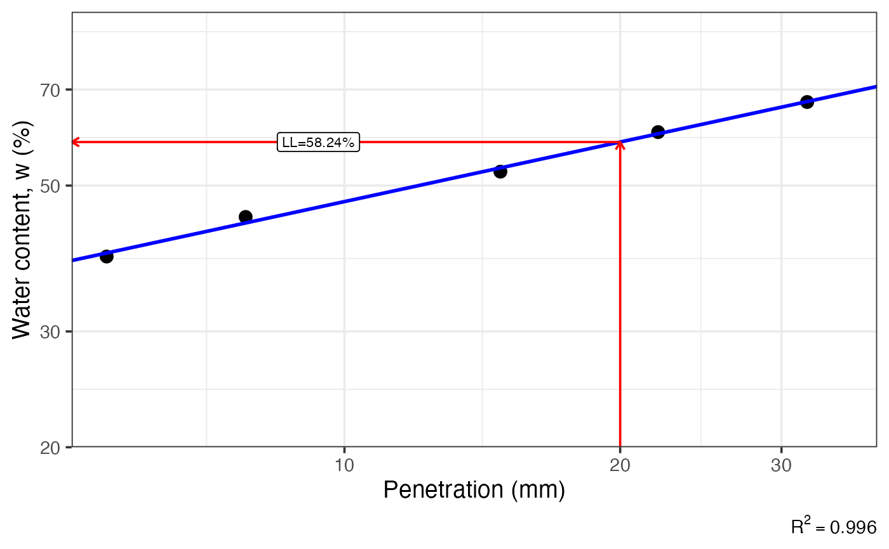
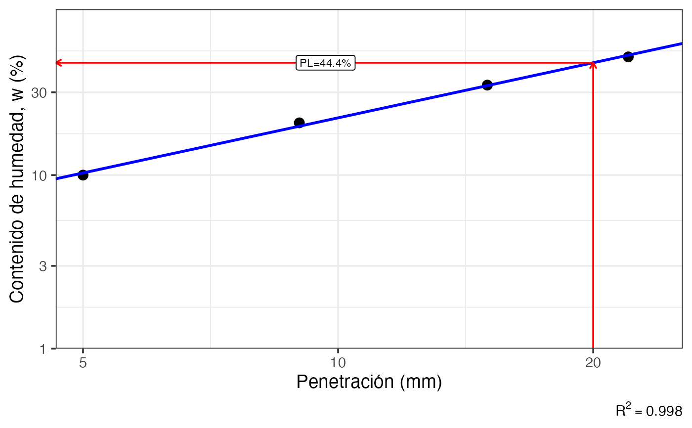

Fits a linear regression of log10(water content) vs log10(penetration) from a fall cone test, estimates the desired limit (LL or PL) at 20 mm penetration and, if asked for both the plastic limit (PL) at 2 mm penetration.
Arguments
- P
numeric vector. Penetration values (mm).
- W
numeric vector. Water content (percent) corresponding to each value in
P.- limit
character. Limit to compute; either
'l'for liquid limit (LL),'p'for plastic limit (PL), or'b'for both. Default is'l'.- lang
character. Label language;
'es'for Spanish or'en'for English. Default'en'.
Value
A named list containing a ggplot2 object (plot) with the fall cone test results and dashed reference line(s), plus numeric scalars for the computed limit and if both limits are computed also the plasticity index is retuned.
Details
The liquid limit (LL) is estimated at 20 mm penetration using a cone of 80g, while the plastic limit (PL) is estimated at 20 mm penetration for a cone of 240 g. If both limits are calculated the the plastic limit (PL) is estimated at 2 mm penetration. The function also computes the plasticity index (PI) as the difference between LL and PL when both limits are computed. The results are visualized in a log-log plot of water content vs penetration, with the fitted regression line and reference lines for the computed limits.
References
Budhu, M. (2011). Soil mechanics and foundations (3rd ed). Wiley.
Das, B. M., & Sobhan, K. (2018). Principles of geotechnical engineering (Ninth edition). Cengage Learning.
See also
Other soil mechanics:
Casagrande_LL(),
DS_plot(),
Mohr_Circle(),
bearing_capacity(),
compaction_test(),
induced_stress(),
insitu_stress(),
particle_size_graph()
Examples
fallcone_limits(P = c(5.5, 7.8, 14.8, 22, 32),
W = c(39, 44.8, 52.5, 60.3, 67))
#> $plot
#> Warning: log-10 transformation introduced infinite values.

#>
#> $ll
#> [1] 58.24
#>
fallcone_limits(P = c(5, 9, 15, 22),
W = c(10, 20, 33, 48),
limit = 'p',
lang = 'es')
#> $plot
#> Warning: log-10 transformation introduced infinite values.

#>
#> $pl
#> [1] 44.4
#>